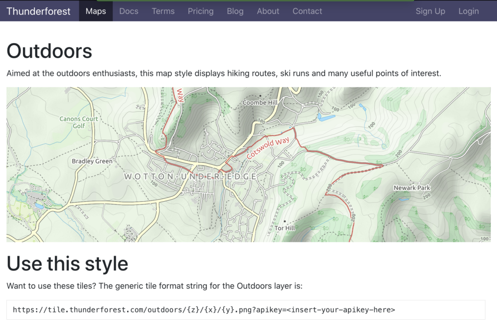
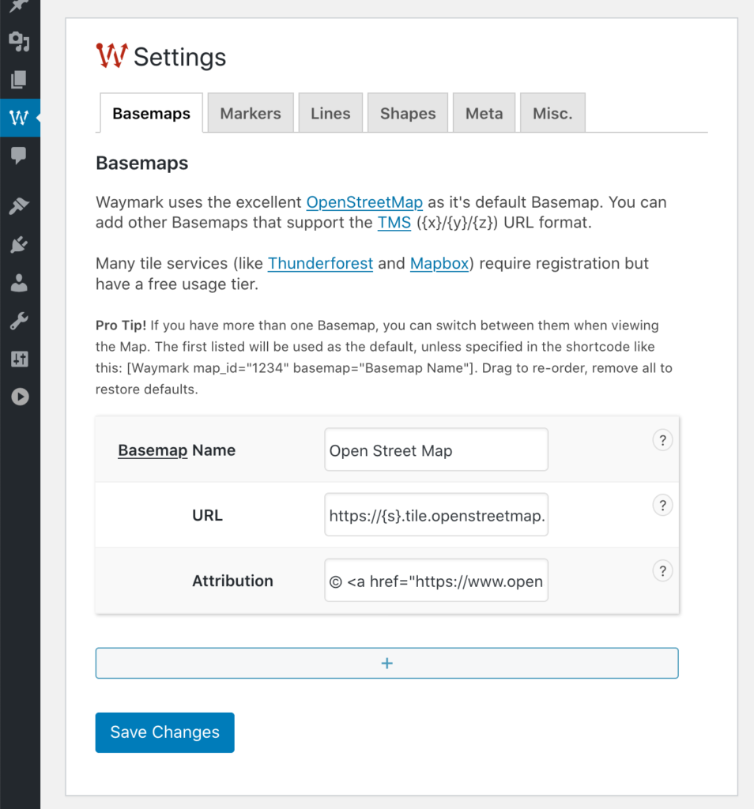

Use third-party Basemaps as your Map background.
Waymark uses the excellent OpenStreetMap as it’s default Basemap and allows integration for services that support tiled web maps . If you have more than one Basemap, you can switch between them when viewing the Map.
Adding a Basemap
There are many Basemap providers to choose from. This page is a great place to preview some of them.
Thunderforest and Mapbox are examples of providers that offer easy access to beautiful Basemaps (including satellite imagery); they require registration, but have a free usage tier.
It is also possible to display Google Maps tiles .

Basemaps can be configured in Waymark > Settings > Basemaps .
To add the Thunderforest Outdoors Basemap, we simply enter the style URL provided:
https://tile.thunderforest.com/outdoors/{z}/{x}/{y}.png?apikey=<insert-your-apikey-here>The attribution field allows you to comply with the provider terms and conditions. In the case of Thunderforest, a link to both Thunderforest and OpenStreetMap is required:
Maps © <a href="http://www.thunderforest.com">Thunderforest</a>, Data © <a href="http://www.openstreetmap.org/copyright">OpenStreetMap contributors</a>Pro Tip! The first Basemap listed will be used by default, unless you specify a different one using the Shortcode .

Examples
This Map uses Thunderforest Outdoors as the Basemap:
Waymark basemap="Outdoors" map_centre="54.526814,-3.017289" map_zoom="16"This Map uses Mapbox Satellite as the Basemap:
Waymark basemap="Satellite" map_centre="54.526814,-3.017289" map_zoom="16" The Basemap URL entered in Settings is:
https://api.mapbox.com/v4/mapbox.satellite/{z}/{x}/{y}@2x.jpg90?access_token=[your_api_key]View the Mapbox Docs for more information on using Raster Tiles .